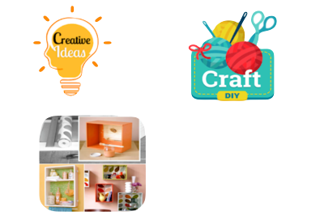

.png)
Aplicaciones / Software: 💻
Te proporcionare algunas aplicaciones en donde podras descargar y consultar manualidades con tu familia o amig@s
- Creative Ideas – DIY & Craft : Para que mantengas viva tu creatividad y la de tus hijos, esta aplicación te brinda a diario nuevas ideas de bricolaje, manualidades, trucos y mucho más. Da click aquí 📲
- DIY Projects Ideas: Una buena aplicación que ofrece numerosas ideas para aquellos que desean crear algo original y único prácticamente de la nada. Da click aquí 📲
- Learn Crafts and DIY Arts: En esta aplicación encontrarás la más genial colección de manualidades para niños y las mejores ideas de manualidades y bricolaje. Da click aquí 📲
- Origami for kids: El origami es un arte muy antiguo que, a su vez, es un pasatiempo muy útil para los niños. Desarrolla habilidades motoras, pensamientos abstracto y espacial, lógica y memoria. Da click aquí 📲
- Manualidades Amino para DIY: Nos encontramos ante la red social más grande solamente para los amantes de las manualidades. En ella, podrás conocer a otras personas como tú y compartir tus creaciones favoritas, técnicas y mucho más. Da click aquí 📲